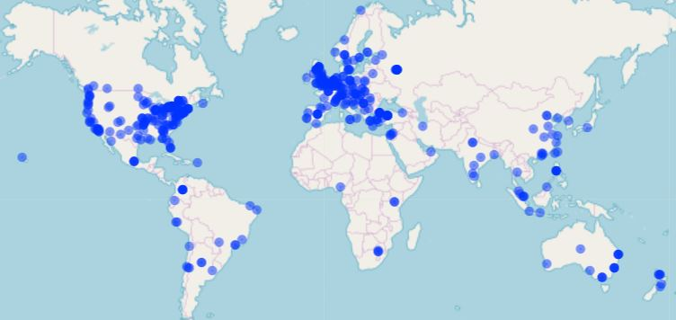

The Psychological Science Accelerator Calls for Study Submissions

The Psychological Science Accelerator (PSA), a network of over 500 labs collaborating to collect psychological data from large-scale international samples of people, is currently accepting study proposals from all areas of psychological science. Anyone can submit a proposal, regardless of PSA membership status, research area, methodology, or career stage. We especially encourage submissions in research areas including but not limited to clinical psychology, community psychology, developmental psychology, and neuroscience. The deadline for submission is September 15th, 2019. The mission of the PSA is to accelerate the accumulation of reliable and generalizable evidence in psychological science, reducing the distance between the truth about human behavior and mental processes and our current understanding. For a full overview of the PSA, please see our paper introducing our policies and procedures (https://psyarxiv.com/785qu/). For information on previous successful submissions, please see each study’s status page, with descriptions and links to study materials and preprints (https://psysciacc.org/studies/).

Proposed studies can test novel hypotheses or focus on the replication of previous findings, can be basic or applied in focus, and can be exploratory or confirmatory in nature. Because accepted studies will likely involve considerable use of resources, the study selection process begins with the evaluation of a stage 1 Registered Report style submission. Once submitted, the proposals will be masked and checked for completeness. Then, our Study Selection Committee will conduct an initial evaluation of all proposed studies (see below for more information on the feasibility check portion of this initial evaluation), and vote on their acceptability for further consideration. Studies that pass this check will be fully evaluated by 6-11 peer reviewers, shared with all members of the PSA network to be rated, and either provisionally accepted or rejected by the Study Selection Committee. Studies that are provisionally accepted enter a second stage of preparation and final evaluation before the PSA officially accepts the project, makes a public announcement, and recruits data collection labs. During this second stage of preparation and evaluation, the PSA and proposing authors collectively conduct a needs assessment. The goal is to identify all of the resources the provisionally-accepted project will need in terms of methodology, funding, translation, ethics, data monitor, project monitor, and logistics. This is an in-depth feasibility evaluation that will ensure that the project, if officially accepted, can be carried out to a high standard for rigor. Projects that pass the in-depth feasibility evaluation proceed to the preparation phase. During this phase, the PSA assigns key PSA personnel to the project, including a project monitor, methodologist, data monitor, ethics monitor, and translation monitor in accordance with the needs assessment (these roles can be filled by proposing authors if they have the skills and capacity to do so). This group will then meet with the proposing authors to 1) establish a collaboration agreement, 2) identify who will be the lead communicator with data collection labs, and 3) establish a clear deadline for the proposing authors to convert their PSA proposal into a journal-quality draft of a Stage 1 Registered Report (RR). This journal-quality draft RR represents the final record of the motivation for the study and the methods to be used, including analysis plan. PSA directors will review the RR to make the final decision about whether to officially accept the project and make a public announcement to recruit data collection labs (with a link to the RR). Projects that are officially accepted move to the next stage of preparation, in which proposing authors will revise the RR based on feedback on the draft sent out to data collection labs and obtain ethics approval at their primary institution. Even after official acceptance, PSA studies may go through revisions. For instance, reviewers at journals may suggest additional measures or procedural changes. Accepted proposals are not unchangeable. However, proposing authors and the PSA will make every effort to minimize the likelihood of post-acceptance changes. If the changes necessary after acceptance are too many in number or too significant, the PSA may ask proposing authors to withdraw their project and resubmit it during the next call for studies. Changes that are most likely to trigger a request for resubmission are those that increase the burden on data collecting sites. After official acceptance, all review materials (submissions, peer reviews, network ratings, and Study Selection Committee decision letters) will be made publicly available for accepted submissions, but not rejected submissions.
Feasibility
All feasibility decisions are made with respect to our current, and ever-changing, resources. Although the PSA is comprised of hundreds of labs from around the world who have agreed, in principle, to volunteer some of their resources to PSA projects, we may not be able to accommodate all types of designs. A few important feasibility considerations that may result in a study not moving beyond the feasibility check include:
- Does the study require specialized equipment (e.g., eye-tracking, EEG) or proprietary experimental software (e.g., E-Prime) to be used at the data collection sites?
- Can experimental materials and analysis scripts be shared easily and made publicly available?
- Does the study require “hard-to reach” samples (e.g., children, minority groups, clinical populations, etc.)?
- Is the target sample size per site, number of data collection sites, duration of the individual data collection sessions, and number of data collection sessions required fully justified and balanced so as to not overburden the PSA network?
- Is the likelihood and severity of risk to participants kept to a minimum, such that the risk is not greater than what participants would face normally and would not require special consideration or deliberation from an ethics board?
Characteristics of strong submissions
Beyond simply being feasible given current PSA resources, strong submissions will also:
- Accurately and clearly describe literature relevant to the study’s goals and design, such that researchers unfamiliar with the subject can understand the basic concepts behind the theory/phenomenon and the purpose of the research.
- Clearly articulate the purpose of the research, relevant research questions, and hypotheses (if confirmatory).
- Clearly articulate the research design, with a focus on sound methodology appropriate to the research questions, including adequate power analysis to justify sample size.
- Provide examples of relevant material, for example websites, experimental scripts (e.g., E-prime, Inquist, OpenSesame), precise experimental design, and/or stimuli.
- Accurately and clearly describe an analysis strategy appropriate to the research questions and design. Pilot or simulated data and working analysis scripts are ideal for clarity.
- Make a compelling case for the importance of large-scale collaborative data collection for the project.
Submission Format and Guidelines
The following components are required for all submissions:
- Cover Page, including the title of the study, date of the latest draft, and keywords
- Abstract of up to 150 words
- Main body submission text of up to 5,000 words
- A version of the submission with cover page included
- A masked version of the submission without the cover page
- References
- Supplementary materials
The following guidelines are intended to assist you in the preparation of your study submission to the Psychological Science Accelerator. Submissions normally include a description of the key background literature and motivation for the study, hypotheses, study procedures, proposed statistical analysis plan, a statistical power analysis, and pilot data (wherever applicable).
Introduction
A review of the relevant literature that motivates the research question and a full description of the study aims and hypotheses.
Method
A full description of proposed sample characteristics, including criteria for data inclusion and exclusion (e.g., outlier extraction). Procedures for objectively defining exclusion criteria caused by technical errors or for any other reasons must be specified, including details of how and under what conditions data would be replaced. A description of study procedures in sufficient detail to allow another researcher to repeat the methodology exactly, without requiring further information. Proposed analysis pipeline, including all preprocessing steps, and a precise description of all planned analyses, including appropriate correction for multiple comparisons. Specify all covariates or regressors. Specify analysis decisions that are contingent on the outcome of prior analyses.
Results
Studies involving Neyman-Pearson inference must include a statistical power analysis. Estimated effect sizes should be justified with reference to the existing literature or theory. Because publication bias inflates published estimates of effect size, power analysis should be based on the lowest available or meaningful estimate of the effect size. In the case of highly uncertain effect sizes, a variable sample size and interim data analysis is permissible but with inspection points stated in advance, appropriate Type I error correction for ‘peeking’ employed, and a final stopping rule for data collection outlined. For studies involving analyses with Bayes factors, the predictions of the theory must be specified so that a Bayes factor can be calculated. Authors should indicate what distribution will be used to represent the predictions of the theory and how its parameters will be specified. Full descriptions must be provided of any outcome-neutral criteria that must be met for successful testing of the stated hypotheses. Such quality checks might include the absence of floor or ceiling effects in data distributions, positive controls, or other quality checks that are orthogonal to the experimental hypotheses.
Supplemental Materials
Include full questionnaires, stimuli, and materials needed to conduct the study. Pilot data can be included to establish proof of concept, effect size estimations, or feasibility of proposed methods. Simulated data and analysis scripts are ideal for clarity of the exclusion criteria and analysis plan.
These guidelines were adapted from https://osf.io/pukzy
Submissions can be made via this google form. Submissions will be accepted until 23:59 in the last time zone on earth on September 15th, 2019. If you have any questions, do not hesitate to email the PSA Director (Chris Chartier, cchartie@ashland.edu).